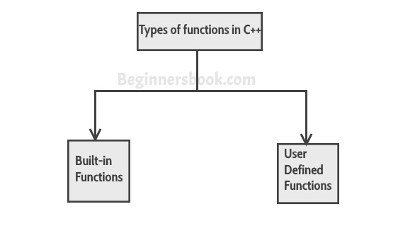

C++

About
The C++ programming language has a history going back to 1979, when Bjarne Stroustrup was doing work for his Ph.D. thesis. He began work on "C with Classes", which as the name implies was meant to be a superset of the C language. His goal was to add object-oriented programming into the C language, which was and still is a language well-respected for its portability without sacrificing speed or low-level functionality.
His language included classes, basic inheritance, inlining, default function arguments, and strong type checking in addition to all the features of the C language. The first C with Classes compiler was called Cfront, which was derived from a C compiler called CPre. It was a program designed to translate C with Classes code to ordinary C.
In 1983, the name of the language was changed from C with Classes to C++. The ++ operator in the C language is an operator for incrementing a variable, which gives some insight into how Stroustrup regarded the language. Many new features were added around this time, the most notable of which are virtual functions, function overloading, references with the & symbol, the const keyword, and single-line comments using two forward slashes.
In 1985, C++ was implemented as a commercial product. The language was not officially standardized yet. The language was updated again in 1989 to include protected and static members, as well as an inheritance from several classes.
In 1990, Turbo C++ was released as a commercial product. Turbo C++ added a lot of additional libraries which have had a considerable impact on C++'s development.
In 1998, the C++ standards committee published the first international standard for C++ ISO/IEC 14882:1998, which is informally known as C++98. The Standard Template Library, which began its conceptual development in 1979, was also included. In 2003, the committee responded to multiple problems that were reported with their 1998 standard and revised it accordingly. The changed language was named C++03.
In mid-2011, the new C++ standard (C++11) was finished. The new features included Regex support, a randomization library, a new C++ time library, atomics support, a standard threading library, a new for loop syntax providing functionality similar to for each loops in certain other languages, the auto keyword, new container classes, better support for unions and array-initialization lists and variadic templates.
Why should we use it
1.Portability
C++ offers the feature of portability or platform independence which allows the user to run the same program on different operating systems or interfaces at ease.
Suppose you write a program in LINUX OS and for some apparent reason you switch to Windows OS, you would be able to run the same program in windows as well without any error. This feature proves to be of great convenience to the programmer.
2-Object-oriented
One of the biggest advantages of C++ is the feature of object-oriented programming which includes concepts like classes, inheritance, polymorphism, data abstraction, and encapsulation that allow code reusability and makes a program even more reliable.
Not only this, it helps us deal with real-world problems by treating data as an object. C lacked this feature and hence it was created, proving to be of great significance.
3. Multi-paradigm
C++ is a multi-paradigm programming language. The term “Paradigm” refers to the style of programming. It includes logic, structure, and procedure of the program. Generic, imperative, and object-oriented are three paradigms of C++.
Let us now try to understand what generic programming means. Generic programming refers to the use of a single idea to serve several purposes. Imperative programming, on the other hand, refers to the use of statements that change a program’s state.
4. Low-level Manipulation
Since C++ is closely associated with C, which is a procedural language closely related to the machine language, C++ allows low-level manipulation of data at a certain level. Embedded systems and compiler are created with the help of C++.
5. Memory Management
C++ gives the programmer the provision of total control over memory management. This can be considered both as an asset and a liability as this increases the responsibility of the user to manage memory rather than it being managed by the Garbage collector. This concept is implemented with the help of DMA (Dynamic memory allocation) using pointers.
6. Large Community Support
C++ has a large community that supports it by providing online courses and lectures, both paid and unpaid. Statistically speaking, C++ is the 6th most used and followed tag on StackOverflow and GitHub.
7. Compatibility with C
C++ is pretty much compatible with C. Virtually, every error-free C program is a valid C++ program. Depending on the compiler used, every program of C++ can run on a file with .cpp extension.
Demerits
It has no security
Complex in a very large high-level program.
Used for platform specific application commonly.
For a particular operating system or platform, the library set has usually chosen that locks.
When C++ used for web applications complex and difficult to debug.
C++ can't support garbage collection.
C++ is not secure because it has a pointer, friend function, and global variable.
No support for threads built in.

1) Build-in
functions
Built-in functions are also known as library functions. We need not to declare and define
these functions as they are already written in the C++ libraries such as iostream, cmath etc. We can directly call them when we need.
2)User define function
C++ allows programmer to define their own function. A user-defined function groups code
to perform a specific task and that group of code is given a name(identifier). When the function is invoked from any part of program, it all executes the codes defined in the body of function
Advantages of Function
Code Reusability :
By creating functions in C++, you can call it many times. So we don't need to write the same code again and again.
Code optimization :
It makes the code optimized, we don't need to write much code